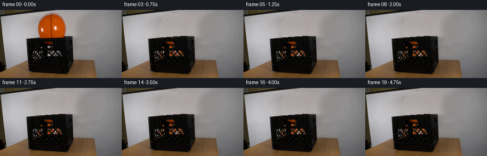
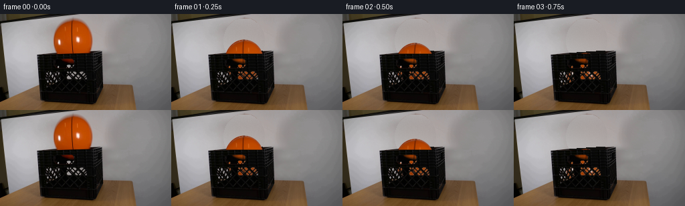
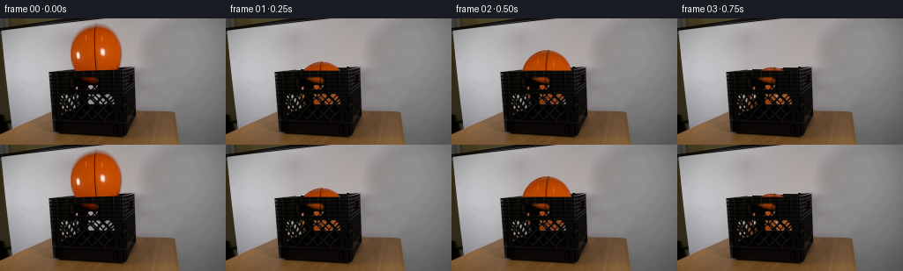

CODING AGENTS AS PIXEL WORLD MODELS
traex/GPT-6.1-Sol · 0015
点击播放 · 原生 RGB 像素
逐轮保存的候选
回放视频、检查图与代码变化。
每份候选均可单独播放。实际图片检查记录在下方工具轨迹中。
候选 01播放与检查图
点击播放 · 原生 RGB 像素

展开代码变化
--- 上一保存版本
+++ 本次保存版本
@@ -0,0 +1,172 @@
+from pathlib import Path
+import numpy as np
+from PIL import Image, ImageDraw
+from scipy.ndimage import map_coordinates, gaussian_filter, binary_fill_holes, binary_dilation
+from artifact_io import save
+
+ROOT = Path(__file__).resolve().parent
+H, W = 144, 256
+Y, X = np.mgrid[:H, :W].astype(float)
+SOURCE = np.array(Image.open(ROOT / 'first_frame.png').convert('RGB'))
+S = SOURCE.astype(float)
+CX, CY, RX, RY = 108.64, 39.94, 29.2, 32.35
+rng = np.random.default_rng(215)
+
+
+def poly_features(x, y):
+ x = (x - 110) / 60
+ y = (y - 30) / 30
+ return np.stack([np.ones_like(x),x,y,x*x,x*y,y*y,x*x*x,x*x*y,x*y*y,y*y*y],axis=-1)
+
+
+def clean_plate():
+ # Reconstruct the narrow piece of backdrop hidden by the initial sphere.
+ ellipse = ((X-CX)/RX)**2 + ((Y-CY)/RY)**2
+ wall = (X>45)&(X<190)&(Y>12)&(Y<54)&(ellipse>1.40)
+ A = poly_features(X[wall],Y[wall])
+ coef = np.linalg.lstsq(A,S[wall],rcond=None)[0]
+ reconstruction = poly_features(X,Y) @ coef
+ noise = gaussian_filter(rng.normal(0, .85, (H,W)), .38)
+ reconstruction += noise[...,None]
+ plate = S.copy()
+ clear = (ellipse<1.14)&(Y>=7)&(Y<60)
+ plate[clear] = reconstruction[clear]
+ # A perspective back lip and shaded interior. The front lip remains an
+ # unchanged foreground photographic layer.
+ lip = 60.25 - .068*(X-57)
+ inside = clear & (Y>lip-.8)
+ dark = np.stack([13+.045*(X-85),12+.04*(X-85),10+.04*(X-85)],-1)
+ dark += noise[...,None]*.55
+ lip_light = 17*np.exp(-((Y-lip)/.48)**2)
+ dark += lip_light[...,None]
+ plate[inside] = dark[inside]
+ # The first-frame ball is also visible through the small upper handle.
+ handle_area = (Y>=66)&(Y<=74)&(X>=89)&(X<=113)
+ orange = handle_area & ((S[...,0]-S[...,1])>7)
+ neutral = (S[...,1]+S[...,2])*.42+2
+ plate[orange] = np.stack([neutral,neutral,neutral*.88],-1)[orange]
+ return np.clip(plate,0,255), clear
+
+PLATE, CLEAR = clean_plate()
+
+# Retain the actual crate lattice and all its subpixel, photographic edges.
+LUM = S.mean(-1)
+HOLES = np.clip((LUM-17)/130,0,1)
+HOLES *= ((Y>=75)&(Y<=105)&(X>=65)&(X<=131))
+HOLES = np.where(HOLES>.075, HOLES, 0)
+# Upper handle aperture inferred from the orange portion of the source.
+HANDLE = np.zeros((H,W))
+zone = (Y>=66)&(Y<=74)&(X>=89)&(X<=113)
+HANDLE[zone] = np.clip((S[...,0]-S[...,1])[zone]/95,0,.98)
+# Layer visibility for the ball above the crate, and for its perforations.
+FRONT_CUTOFF = 59.05
+
+# Infer the original opaque sphere silhouette, including its black channels.
+rr,gg,bb = S.transpose(2,0,1)
+orange = (rr>1.34*gg)&(rr>1.65*bb)&(rr>65)&(Y>=7)&(Y<59)&(X>75)&(X<143)
+valid = np.zeros((H,W),bool)
+for y in range(7,59):
+ xx = np.flatnonzero(orange[y])
+ if len(xx):
+ valid[y,xx[0]:xx[-1]+1] = True
+valid = binary_fill_holes(valid)
+# Build the unseen lower cap with the same rubber, diffuse shading and channels.
+u=(X-CX)/RX
+v=(Y-CY)/RY
+z=np.sqrt(np.maximum(0,1-u*u-v*v))
+light=np.clip(.42+.55*z+.085*u-.115*v,0,1)
+noise_tex=rng.normal(0,1,(H,W))
+tex=np.stack([108+88*light,25+51*light,np.maximum(.5,1.4+2*light)],-1)
+tex += noise_tex[...,None]*np.array([1.4,.8,.28])
+# Basketball grooves continue around the lower hemisphere.
+channel=np.exp(-((u+.022-.05*np.maximum(v,0))/.034)**4)
+tex=tex*(1-channel[...,None]*.67)
+# Blend the observed surface into its continuation. Disentangle edge pixels
+# from the old wall so a translated edge cannot carry a pale halo.
+texture = tex.copy()
+for y in range(7,59):
+ xs=np.flatnonzero(valid[y])
+ if not len(xs): continue
+ a,b=int(xs[0]),int(xs[-1])
+ texture[y,a:b+1]=S[y,a:b+1]
+ for x in [a,b]:
+ contrast=S[y,x,0]-S[y,x,1]
+ opacity=np.clip(contrast/105,.28,1)
+ clean=(S[y,x]-(1-opacity)*PLATE[y,x])/opacity
+ texture[y,x]=np.clip(clean,0,255)
+# Source pixels within the circle but not detected by the orange scan are
+# channels/embossed writing, and not additional objects.
+solid=((u*u+v*v)<.93)&(Y>=9)&(Y<=57)
+texture[solid]=S[solid]
+for y in range(54,59):
+ weight=(59-y)/5
+ use=valid[y]
+ texture[y,use]=weight*texture[y,use]+(1-weight)*tex[y,use]
+
+
+def position(t):
+ # Gravity with short, dissipative rebounds off the bottom of the crate.
+ release=.015
+ t=max(0,t-release)
+ g=1100.0
+ floor=94.0
+ drop=floor-CY
+ hit=np.sqrt(2*drop/g)
+ if t<hit:
+ return CX-.4*t,CY+.5*g*t*t,0.018*t,1.0
+ tau=t-hit
+ speed=np.sqrt(2*g*drop)*.59
+ elapsed=0
+ for bounce in range(8):
+ duration=2*speed/g
+ if tau<=duration:
+ cy=floor-speed*tau+.5*g*tau*tau
+ deform=1-.035*np.exp(-(tau/.032)**2)*(speed/200)
+ return CX-1.9*(1-np.exp(-(t-hit)*3)),cy,.018*hit+.16*(1-np.exp(-(t-hit)*3)),deform
+ tau-=duration
+ elapsed+=duration
+ speed*=.49
+ if speed<3: break
+ return CX-1.9, floor, .166, 1.0
+
+
+def render(t):
+ cx,cy,angle,squash=position(t)
+ frame=PLATE.copy()
+ # Only repair pixels that were previously covered by the initial ball;
+ # every other backdrop/table pixel remains exactly registered.
+ high=3
+ yy,xx=np.mgrid[:H*high,:W*high].astype(float)
+ xx=(xx+.5)/high-.5
+ yy=(yy+.5)/high-.5
+ bu=(xx-cx)/(RX/np.sqrt(squash))
+ bv=(yy-cy)/(RY*squash)
+ r=np.sqrt(bu*bu+bv*bv)
+ alpha=np.clip((1-r)*RX*high+.5,0,1)
+ co,si=np.cos(angle),np.sin(angle)
+ su=bu*co+bv*si
+ sv=-bu*si+bv*co
+ px=CX+RX*su
+ py=CY+RY*sv
+ colors=np.stack([map_coordinates(texture[...,c],[py,px],order=1,mode='nearest') for c in range(3)],-1)
+ # Slightly shade the sphere inside the crate without changing its color.
+ depth=np.clip((yy-58)/45,0,1)
+ colors*= (1-.17*depth)[...,None]
+ upper=np.clip((FRONT_CUTOFF-yy)*high+.5,0,1)
+ holes=map_coordinates(HOLES+HANDLE,[yy,xx],order=1,mode='constant')
+ visibility=np.clip(upper+holes,0,1)
+ alpha*=visibility
+ premult=(colors*alpha[...,None]).reshape(H,high,W,high,3).mean((1,3))
+ alpha=alpha.reshape(H,high,W,high).mean((1,3))
+ frame=frame*(1-alpha[...,None])+premult
+ return np.clip(np.rint(frame),0,255).astype(np.uint8)
+
+
+def main():
+ frames=np.stack([SOURCE]+[render(i/4) for i in range(1,20)])
+ save(frames,ROOT)
+ Image.fromarray(np.clip(PLATE,0,255).astype(np.uint8)).save(ROOT/'.tmp'/'empty_plate.png')
+ assert np.array_equal(frames[0],SOURCE)
+
+if __name__=='__main__':
+ main()
候选 02播放与检查图
点击播放 · 原生 RGB 像素


展开代码变化
--- 上一保存版本
+++ 本次保存版本
@@ -2,6 +2,8 @@
import numpy as np
from PIL import Image, ImageDraw
from scipy.ndimage import map_coordinates, gaussian_filter, binary_fill_holes, binary_dilation
+from scipy.sparse import lil_matrix
+from scipy.sparse.linalg import spsolve
from artifact_io import save
ROOT = Path(__file__).resolve().parent
@@ -28,12 +30,42 @@
reconstruction = poly_features(X,Y) @ coef
noise = gaussian_filter(rng.normal(0, .85, (H,W)), .38)
reconstruction += noise[...,None]
+ # A harmonic RGB continuation is pinned to the observed wall around the
+ # silhouette, so its reconstructed boundary cannot leave a stationary
+ # ellipse in the background after the ball has fallen.
+ wall_fill = (ellipse<1.17)&(Y>=7)&(Y<=54)
+ observed_wall = S.copy()
+ for row in [55,56]:
+ lcol,rcol = 78,139
+ left = S[53:55,lcol-2:lcol+1].mean((0,1))
+ right = S[52:54,rcol:rcol+3].mean((0,1))
+ fraction = np.clip((np.arange(W)-lcol)/(rcol-lcol),0,1)
+ observed_wall[row] = left[None,:]*(1-fraction[:,None])+right[None,:]*fraction[:,None]
+ indices = np.full((H,W),-1,dtype=int)
+ py,px = np.where(wall_fill)
+ indices[py,px]=np.arange(len(py))
+ matrix=lil_matrix((len(py),len(py)))
+ rhs=np.zeros((len(py),3))
+ for k,(row,col) in enumerate(zip(py,px)):
+ matrix[k,k]=4
+ for dy,dx in [(1,0),(-1,0),(0,1),(0,-1)]:
+ nr,nc=row+dy,col+dx
+ j=indices[nr,nc]
+ if j>=0:
+ matrix[k,j]=-1
+ else:
+ rhs[k]+=observed_wall[nr,nc]
+ reconstruction[wall_fill]=spsolve(matrix.tocsr(),rhs)+noise[wall_fill,None]
+ lower_wall=(ellipse<1.17)&(Y>=55)&(Y<60)
+ for row in range(55,60):
+ use=lower_wall[row]
+ reconstruction[row,use]=observed_wall[55,use]+noise[row,use,None]
plate = S.copy()
- clear = (ellipse<1.14)&(Y>=7)&(Y<60)
+ clear = (ellipse<1.17)&(Y>=7)&(Y<60)
plate[clear] = reconstruction[clear]
# A perspective back lip and shaded interior. The front lip remains an
# unchanged foreground photographic layer.
- lip = 60.25 - .068*(X-57)
+ lip = 60.35 - .057*(X-57)
inside = clear & (Y>lip-.8)
dark = np.stack([13+.045*(X-85),12+.04*(X-85),10+.04*(X-85)],-1)
dark += noise[...,None]*.55
候选 03播放与检查图
候选 04播放与检查图
点击播放 · 原生 RGB 像素

展开代码变化
--- 上一保存版本
+++ 本次保存版本
@@ -33,7 +33,7 @@
# A harmonic RGB continuation is pinned to the observed wall around the
# silhouette, so its reconstructed boundary cannot leave a stationary
# ellipse in the background after the ball has fallen.
- wall_fill = (ellipse<1.17)&(Y>=7)&(Y<=54)
+ wall_fill = (ellipse<1.30)&(Y>=5)&(Y<=54)
observed_wall = S.copy()
for row in [55,56]:
lcol,rcol = 78,139
@@ -56,12 +56,12 @@
else:
rhs[k]+=observed_wall[nr,nc]
reconstruction[wall_fill]=spsolve(matrix.tocsr(),rhs)+noise[wall_fill,None]
- lower_wall=(ellipse<1.17)&(Y>=55)&(Y<60)
+ lower_wall=(ellipse<1.30)&(Y>=55)&(Y<60)
for row in range(55,60):
use=lower_wall[row]
reconstruction[row,use]=observed_wall[55,use]+noise[row,use,None]
plate = S.copy()
- clear = (ellipse<1.17)&(Y>=7)&(Y<60)
+ clear = (ellipse<1.30)&(Y>=5)&(Y<60)
plate[clear] = reconstruction[clear]
# A perspective back lip and shaded interior. The front lip remains an
# unchanged foreground photographic layer.
@@ -140,14 +140,14 @@
# Gravity with short, dissipative rebounds off the bottom of the crate.
release=.015
t=max(0,t-release)
- g=1100.0
+ g=1500.0
floor=94.0
drop=floor-CY
hit=np.sqrt(2*drop/g)
if t<hit:
return CX-.4*t,CY+.5*g*t*t,0.018*t,1.0
tau=t-hit
- speed=np.sqrt(2*g*drop)*.59
+ speed=np.sqrt(2*g*drop)*.70
elapsed=0
for bounce in range(8):
duration=2*speed/g
可观测工具轨迹
实际执行的命令与返回图片。
命令 1exit 0
/bin/bash -lc 'ls -la && cat prompt.txt && cat GENERATION_RULES.md'
命令 2exit 0
/bin/bash -lc "cat artifact_io.py && python - <<'PY'
from PIL import Image
import numpy as np
im=np.asarray(Image.open('first_frame.png').convert('RGB'))
print('shape',im.shape)
for y in range(0,144,4):
s=''
for x in range(0,256,4):
p=im[y:y+4,x:x+4].mean((0,1));r,g,b=p
s+= 'O' if r>g*1.4 and r>b*1.7 and r>75 else ('#' if max(p)<55 else ('=' if r>g*1.16 and g>b*1.12 else (' ' if min(p)>165 else '.')))
print(f'{y:3} '+s)
PY"命令 3exit 0
/bin/bash -lc "python - <<'PY'
import numpy as np
from PIL import Image
im=np.array(Image.open('first_frame.png')); r,g,b=im.transpose(2,0,1).astype(float)
m=(r>1.35*g)&(r>1.7*b)&(r>85)&(np.indices(r.shape)[0]<80)
for y in range(0,81,2):
xs=np.where(m[y])[0]
if len(xs): print(y, xs.min(), xs.max(),len(xs), 'segments',np.split(xs,np.where(np.diff(xs)>1)[0]+1))
print('RGB samples')
for y in [5,10,20,30,40,50,55,60,65,70,80,100,120,135]:
print(y,' '.join(f'{x}:{tuple(im[y,x])}' for x in [0,10,20,30,40,50,60,70,80,90,100,110,120,130,140,150,160,200,250]))
PY"命令 4exit 0
/bin/bash -lc "python - <<'PY'
import numpy as np
from PIL import Image
im=np.array(Image.open('first_frame.png')).astype(float)
# one char per pixel, intensities for relevant crop
r,g,b=im.transpose(2,0,1)
chars=np.array(list(' .:-=+*#%@'))
for y in range(48,136,2):
a=im[y:y+2,50:158].mean(0);lum=a.mean(1)
s=chars[np.minimum(9,(lum/22).astype(int))]
orange=(a[:,0]>a[:,1]*1.5)&(a[:,0]>a[:,2]*2)&(a[:,0]>40)
s[orange]='O'
print(f'{y:3} '+''.join(s))
PY"命令 5exit 0
/bin/bash -lc "python - <<'PY'
from PIL import Image
import numpy as np
im=np.array(Image.open('first_frame.png'))
# numeric luminance map above ball before release
c=np.array(list(' .:-=+*#%@'))
for y in range(0,14):
lum=im[y,:90].mean(1)
print(f'{y:2} '+''.join(c[np.minimum(9,(lum/22).astype(int))]))
# ascii exact crate target
for y in range(53,106):
pix=im[y,54:156].astype(float);lum=pix.mean(1)
sym=c[np.minimum(9,(lum/22).astype(int))]
sym[(pix[:,0]>pix[:,1]*1.5)&(pix[:,0]>pix[:,2]*2)&(pix[:,0]>40)]='O'
print(f'{y:3} '+''.join(sym))
PY"命令 6exit 0
/bin/bash -lc "python - <<'PY'
import numpy as np
from PIL import Image
from scipy.optimize import least_squares
im=np.array(Image.open('first_frame.png')).astype(float);y,x=np.indices(im.shape[:2]);r,g,b=im.transpose(2,0,1)
m=(r>1.4*g)&(r>1.7*b)&(r>80)&(y<60)
pts=[]
for j in range(10,59):
xx=np.where(m[j])[0]
pts.extend([(xx.min(),j),(xx.max(),j)])
p=np.array(pts)
f=least_squares(lambda a: ((p[:,0]-a[0])/a[2])**2+((p[:,1]-a[1])/a[3])**2-1,[109,40,29,32])
print(f.x)
for j in range(52,63):print(j,[(i,tuple(im[j,i].astype(int))) for i in range(78,144,2)])
PY"命令 7exit 0
/bin/bash -lc "python - <<'PY'
import numpy as np
from PIL import Image
im=np.array(Image.open('first_frame.png')).astype(float);r,g,b=im.transpose(2,0,1)
for yy in range(53,137,3):
a=im[yy].mean(1); sel=np.where((a<50)&(np.arange(256)>45)&(np.arange(256)<165))[0]
print(yy, sel.min(),sel.max(), 'mean',[(xx,round(a[xx])) for xx in range(55,156,5)])
# crop enlarged numeric orange seam representation
c=np.array(list(' .:-=+*#%@'))
for yy in range(7,60):
pix=im[yy,78:141];lum=pix[:,0];line=c[np.minimum(9,(lum/22).astype(int))]
print(f'{yy:2} '+''.join(line))
PY"命令 8exit 0
/bin/bash -lc "python - <<'PY'
import numpy as np
from PIL import Image
from scipy.optimize import least_squares
im=np.array(Image.open('first_frame.png')).astype(float);r,g,b=im.transpose(2,0,1)
m=(r>1.4*g)&(r>1.7*b)&(r>80)
p=[]
for j in range(10,59):
xx=np.where(m[j])[0];p.extend([(xx.min(),j),(xx.max(),j)])
p=np.array(p)
f=least_squares(lambda a:np.sqrt((p[:,0]-a[0])**2+(p[:,1]-a[1])**2)-a[2],[109,40,29]);print('circle',f.x,'err',np.std(f.fun))
# background map and boundaries
for yy in range(50,65):
print(yy,' '.join('%3d'%im[yy,xx].mean() for xx in range(50,155,2)))
PY"命令 9exit 0
/bin/bash -lc "python - <<'PY'
import numpy as np
from PIL import Image
from scipy.ndimage import label
im=np.array(Image.open('first_frame.png')).astype(float)
lum=im.mean(2);y,x=np.indices(lum.shape)
m=(y>=75)&(y<=104)&(x>=63)&(x<=130)&(lum>42)
l,n=label(m)
for k in range(1,n+1):
yy,xx=np.where(l==k)
if len(xx)>2:print(len(xx),(xx.min(),yy.min(),xx.max(),yy.max()), round(lum[l==k].max()))
PY"命令 10exit 0
/bin/bash -lc "python - <<'PY'
import numpy as np
from PIL import Image
im=np.array(Image.open('first_frame.png')).astype(float)
for y in range(64,83):
print(y, ' '.join(f'{x}:{tuple(im[y,x].astype(int))}' for x in range(89,113)))
PY"命令 11exit 0
/bin/bash -lc "cat > generate.py <<'PY'
from pathlib import Path
import numpy as np
from PIL import Image, ImageDraw
from scipy.ndimage import map_coordinates, gaussian_filter, binary_fill_holes, binary_dilation
from artifact_io import save
ROOT = Path(__file__).resolve().parent
H, W = 144, 256
Y, X = np.mgrid[:H, :W].astype(float)
SOURCE = np.array(Image.open(ROOT / 'first_frame.png').convert('RGB'))
S = SOURCE.astype(float)
CX, CY, RX, RY = 108.64, 39.94, 29.2, 32.35
rng = np.random.default_rng(215)
def poly_features(x, y):
x = (x - 110) / 60
y = (y - 30) / 30
return np.stack([np.ones_like(x),x,y,x*x,x*y,y*y,x*x*x,x*x*y,x*y*y,y*y*y],axis=-1)
def clean_plate():
# Reconstruct the narrow piece of backdrop hidden by the initial sphere.
ellipse = ((X-CX)/RX)**2 + ((Y-CY)/RY)**2
wall = (X>45)&(X<190)&(Y>12)&(Y<54)&(ellipse>1.40)
A = poly_features(X[wall],Y[wall])
coef = np.linalg.lstsq(A,S[wall],rcond=None)[0]
reconstruction = poly_features(X,Y) @ coef
noise = gaussian_filter(rng.normal(0, .85, (H,W)), .38)
reconstruction += noise[...,None]
plate = S.copy()
clear = (ellipse<1.14)&(Y>=7)&(Y<60)
plate[clear] = reconstruction[clear]
# A perspective back lip and shaded interior. The front lip remains an
# unchanged foreground photographic layer.
lip = 60.25 - .068*(X-57)
inside = clear & (Y>lip-.8)
dark = np.stack([13+.045*(X-85),12+.04*(X-85),10+.04*(X-85)],-1)
dark += noise[...,None]*.55
lip_light = 17*np.exp(-((Y-lip)/.48)**2)
dark += lip_light[...,None]
plate[inside] = dark[inside]
# The first-frame ball is also visible through the small upper handle.
handle_area = (Y>=66)&(Y<=74)&(X>=89)&(X<=113)
orange = handle_area & ((S[...,0]-S[...,1])>7)
neutral = (S[...,1]+S[...,2])*.42+2
plate[orange] = np.stack([neutral,neutral,neutral*.88],-1)[orange]
return np.clip(plate,0,255), clear
PLATE, CLEAR = clean_plate()
# Retain the actual crate lattice and all its subpixel, photographic edges.
LUM = S.mean(-1)
HOLES = np.clip((LUM-17)/130,0,1)
HOLES *= ((Y>=75)&(Y<=105)&(X>=65)&(X<=131))
HOLES = np.where(HOLES>.075, HOLES, 0)
# Upper handle aperture inferred from the orange portion of the source.
HANDLE = np.zeros((H,W))
zone = (Y>=66)&(Y<=74)&(X>=89)&(X<=113)
HANDLE[zone] = np.clip((S[...,0]-S[...,1])[zone]/95,0,.98)
# Layer visibility for the ball above the crate, and for its perforations.
FRONT_CUTOFF = 59.05
# Infer the original opaque sphere silhouette, including its black channels.
rr,gg,bb = S.transpose(2,0,1)
orange = (rr>1.34*gg)&(rr>1.65*bb)&(rr>65)&(Y>=7)&(Y<59)&(X>75)&(X<143)
valid = np.zeros((H,W),bool)
for y in range(7,59):
xx = np.flatnonzero(orange[y])
if len(xx):
valid[y,xx[0]:xx[-1]+1] = True
valid = binary_fill_holes(valid)
# Build the unseen lower cap with the same rubber, diffuse shading and channels.
u=(X-CX)/RX
v=(Y-CY)/RY
z=np.sqrt(np.maximum(0,1-u*u-v*v))
light=np.clip(.42+.55*z+.085*u-.115*v,0,1)
noise_tex=rng.normal(0,1,(H,W))
tex=np.stack([108+88*light,25+51*light,np.maximum(.5,1.4+2*light)],-1)
tex += noise_tex[...,None]*np.array([1.4,.8,.28])
# Basketball grooves continue around the lower hemisphere.
channel=np.exp(-((u+.022-.05*np.maximum(v,0))/.034)**4)
tex=tex*(1-channel[...,None]*.67)
# Blend the observed surface into its continuation. Disentangle edge pixels
# from the old wall so a translated edge cannot carry a pale halo.
texture = tex.copy()
for y in range(7,59):
xs=np.flatnonzero(valid[y])
if not len(xs): continue
a,b=int(xs[0]),int(xs[-1])
texture[y,a:b+1]=S[y,a:b+1]
for x in [a,b]:
contrast=S[y,x,0]-S[y,x,1]
opacity=np.clip(contrast/105,.28,1)
clean=(S[y,x]-(1-opacity)*PLATE[y,x])/opacity
texture[y,x]=np.clip(clean,0,255)
# Source pixels within the circle but not detected by the orange scan are
# channels/embossed writing, and not additional objects.
solid=((u*u+v*v)<.93)&(Y>=9)&(Y<=57)
texture[solid]=S[solid]
for y in range(54,59):
weight=(59-y)/5
use=valid[y]
texture[y,use]=weight*texture[y,use]+(1-weight)*tex[y,use]
def position(t):
# Gravity with short, dissipative rebounds off the bottom of the crate.
release=.015
t=max(0,t-release)
g=1100.0
floor=94.0
drop=floor-CY
hit=np.sqrt(2*drop/g)
if t<hit:
return CX-.4*t,CY+.5*g*t*t,0.018*t,1.0
tau=t-hit
speed=np.sqrt(2*g*drop)*.59
elapsed=0
for bounce in range(8):
duration=2*speed/g
if tau<=duration:
cy=floor-speed*tau+.5*g*tau*tau
deform=1-.035*np.exp(-(tau/.032)**2)*(speed/200)
return CX-1.9*(1-np.exp(-(t-hit)*3)),cy,.018*hit+.16*(1-np.exp(-(t-hit)*3)),deform
tau-=duration
elapsed+=duration
speed*=.49
if speed<3: break
return CX-1.9, floor, .166, 1.0
def render(t):
cx,cy,angle,squash=position(t)
frame=PLATE.copy()
# Only repair pixels that were previously covered by the initial ball;
# every other backdrop/table pixel remains exactly registered.
high=3
yy,xx=np.mgrid[:H*high,:W*high].astype(float)
xx=(xx+.5)/high-.5
yy=(yy+.5)/high-.5
bu=(xx-cx)/(RX/np.sqrt(squash))
bv=(yy-cy)/(RY*squash)
r=np.sqrt(bu*bu+bv*bv)
alpha=np.clip((1-r)*RX*high+.5,0,1)
co,si=np.cos(angle),np.sin(angle)
su=bu*co+bv*si
sv=-bu*si+bv*co
px=CX+RX*su
py=CY+RY*sv
colors=np.stack([map_coordinates(texture[...,c],[py,px],order=1,mode='nearest') for c in range(3)],-1)
# Slightly shade the sphere inside the crate without changing its color.
depth=np.clip((yy-58)/45,0,1)
colors*= (1-.17*depth)[...,None]
upper=np.clip((FRONT_CUTOFF-yy)*high+.5,0,1)
holes=map_coordinates(HOLES+HANDLE,[yy,xx],order=1,mode='constant')
visibility=np.clip(upper+holes,0,1)
alpha*=visibility
premult=(colors*alpha[...,None]).reshape(H,high,W,high,3).mean((1,3))
alpha=alpha.reshape(H,high,W,high).mean((1,3))
frame=frame*(1-alpha[...,None])+premult
return np.clip(np.rint(frame),0,255).astype(np.uint8)
def main():
frames=np.stack([SOURCE]+[render(i/4) for i in range(1,20)])
save(frames,ROOT)
Image.fromarray(np.clip(PLATE,0,255).astype(np.uint8)).save(ROOT/'.tmp'/'empty_plate.png')
assert np.array_equal(frames[0],SOURCE)
if __name__=='__main__':
main()
PY
python generate.py
python - <<'PY'
import numpy as np
from PIL import Image
import generate
for i in range(6):
im=np.array(Image.open('frames/%02d.png'%i)).astype(float)
print('FRAME',i,'center',generate.position(i/4))
for yy in range(0,114,3):
p=im[yy:yy+3,51:157].reshape(-1,106,3).mean(0).reshape(53,2,3).mean(1)
c=np.array(list(' .:-=+*#%@')); s=c[np.minimum(9,(p.mean(1)/22).astype(int))]
s[(p[:,0]>p[:,1]*1.4)&(p[:,0]>p[:,2]*1.7)&(p[:,0]>40)]='O'
print(''.join(s))
PY"命令 12exit 0
/bin/bash -lc "python - <<'PY'
import generate as g
for y in [10,20,30,40,50,54,56,58]:
print(y,'pred',[(x,g.PLATE[y,x].astype(int).tolist()) for x in [68,76,80,85,90,100,110,120,130,138,145,150]])
print('shape')
PY"命令 13exit 0
/bin/bash -lc "python - <<'PY' import generate as g import numpy as np for y in [10,20,30,40,50,54]: e=np.sqrt(np.clip(1-((y-g.CY)/g.RY)**2,0,1));left=g.CX-g.RX*e;right=g.CX+g.RX*e print(y,'edges',left,right,'neighbors',[(x,g.S[y,x].astype(int).tolist()) for x in range(int(left)-8,int(left),2)],[(x,g.S[y,x].astype(int).tolist()) for x in range(int(right)+2,int(right)+10,2)]) PY"
命令 14exit 0
/bin/bash -lc "python generate.py && python - <<'PY'
import generate as g
import numpy as np
for y in [10,20,30,40,50,54,56,58]:
print(y,[(x,g.PLATE[y,x].astype(int).tolist()) for x in [78,85,95,105,115,125,135,140]])
print('change',[(i,np.count_nonzero(np.any(np.array(__import__('PIL').Image.open('frames/%02d.png'%i))"'!=g.SOURCE,axis=2))) for i in range(20)])
PY'命令 15exit 0
/bin/bash -lc "python - <<'PY'
import numpy as np
cy=39.94;floor=94
for g,e in [(1100,.59),(1450,.68),(1550,.67),(1500,.7)]:
hit=np.sqrt(2*(floor-cy)/g);v=np.sqrt(2*g*(floor-cy))*e
print(g,e,'hit',hit,'cycle',2*v/g)
for i in range(1,6):
t=i/4-.015
if t<hit:y=cy+.5*g*t*t
else:
t-=hit;speed=v
for b in range(8):
d=2*speed/g
if t<d:break
t-=d;speed*=.49
y=floor-speed*t+.5*g*t*t
print(i,round(y,2))
PY"命令 16exit 0
/bin/bash -lc "python generate.py && python - <<'PY'
from PIL import Image
import numpy as np
from pathlib import Path
frames=np.stack([np.array(Image.open(f'frames/{i:02d}.png').convert('RGB')) for i in range(20)])
first=np.array(Image.open('first_frame.png').convert('RGB'))
assert frames.shape==(20,144,256,3)
assert frames.dtype==np.uint8
assert np.array_equal(frames[0],first)
packed=np.load('pixels.npz')['pixels']
assert packed.shape==(144,256,20)
assert np.array_equal(packed[:,:,0],(first[...,0].astype('uint32')<<16)|(first[...,1].astype('uint32')<<8)|first[...,2])
import generate as g
print('Validated 20 RGB frames, 256x144; frame 00 identical.')
print('Ball centers:', [(i,tuple(round(float(v),2) for v in g.position(i/4)[:2])) for i in range(8)])
print('Saved pixels.npz, index.html, and frames/*.png')
PY"保存候选 4 份；完成命令 16 次；可验证图片返回 0 张。原始 API 响应与完整日志保留在本地。